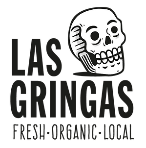
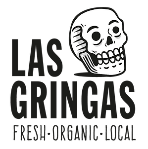

En el año 2017, nació LAS GRINGAS, una pizzería con una visión única en mente: fusionar la tradición de la pizza con la riqueza de los insumos peruanos. Nos enorgullece llevar a tu mesa una experiencia gastronómica única en la que cada bocado es un viaje por los sabores auténticos de Perú.
Nuestra esencia radica en la dedicación artesanal que ponemos en cada pizza que horneamos. Utilizamos un horno de leña tradicional, y nuestras masas son una combinación cuidadosamente seleccionada de harina de quinua, cañihuaco, linaza y maíz morado, creando una base perfecta para nuestros ingredientes excepcionales.
Lo que nos distingue es nuestra pasión por hacer que te sientas bien a través de la comida. En LAS GRINGAS, nuestras pizzas son mucho más que un simple manjar. Incorporamos superalimentos andinos y vegetales frescos en cada creación, además de frutas, productos locales y de temporada para ofrecerte una experiencia culinaria que no solo deleita tu paladar, sino también nutre tu cuerpo y alma.
Nuestra masa es el resultado de una cuidadosa preparación diaria, lo que garantiza su frescura y la textura delgada y crocante que amas. Además, nos enorgullece utilizar ingredientes orgánicos adquiridos de agricultores arequipeños comprometidos con la calidad y la sostenibilidad. Siempre estamos explorando nuevas formas de innovar y sorprenderte con pizzas que desafían las expectativas tradicionales.
En LAS GRINGAS, entendemos que la diversidad es clave. Es por eso que ofrecemos opciones para todos los gustos, incluyendo pizzas y pastas sin gluten, deliciosas ensaladas y una amplia selección de cervezas artesanales peruanas e importadas, junto con ginebras artesanales locales. Queremos ser tu lugar de elección para disfrutar de una comida memorable y auténtica, adaptada a tus preferencias y necesidades dietéticas.
Te invitamos a unirte a nosotros en este emocionante viaje culinario, donde cada pizza es una obra maestra, y cada comida es una experiencia para recordar. En LAS GRINGAS, nuestra pasión es transformar ingredientes en momentos inolvidables. ¡Bienvenido a nuestra mesa!
 
